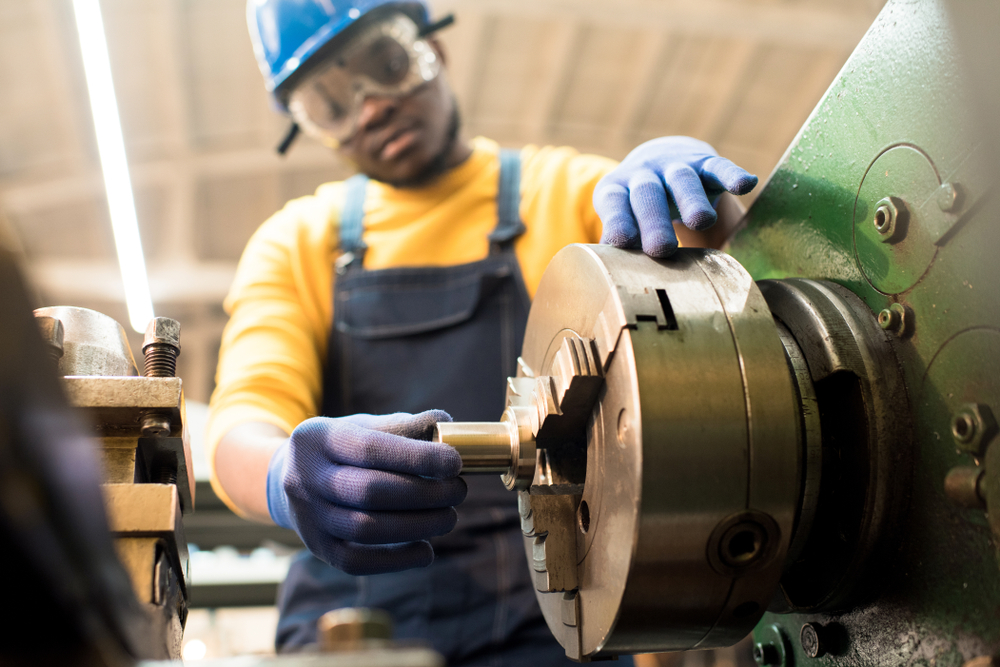
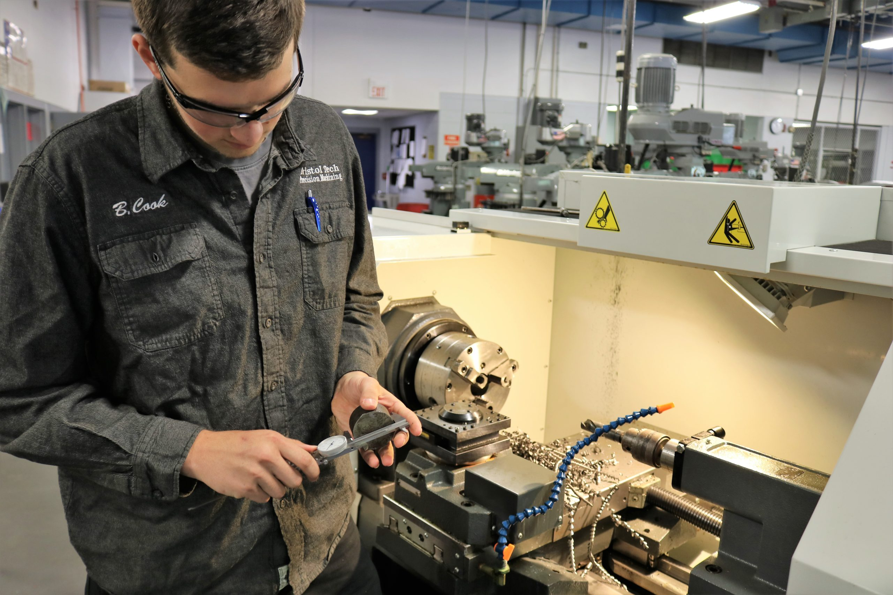
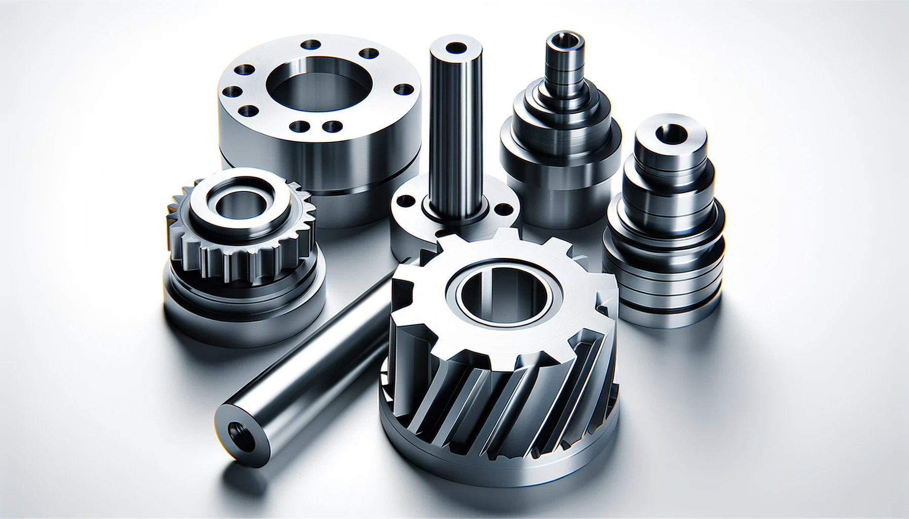

Machining is a manufacturing process where a piece of raw material (usually metal or plastic) is shaped and finished using tools such as drills, lathes, mills, and grinders. The goal is to remove excess material to produce precise shapes, dimensions, and surface finishes.
Machining plays a vital role in modern manufacturing by enabling the precise shaping of parts used in nearly every industry. It allows for the production of highly accurate and complex components that are essential in fields such as aerospace, automotive, medical devices, and industrial machinery. Through techniques like drilling, milling, and turning, machining provides superior surface finishes, supports a wide variety of materials. Without machining, the creation of many modern tools, engines, and structural components would not be possible.


